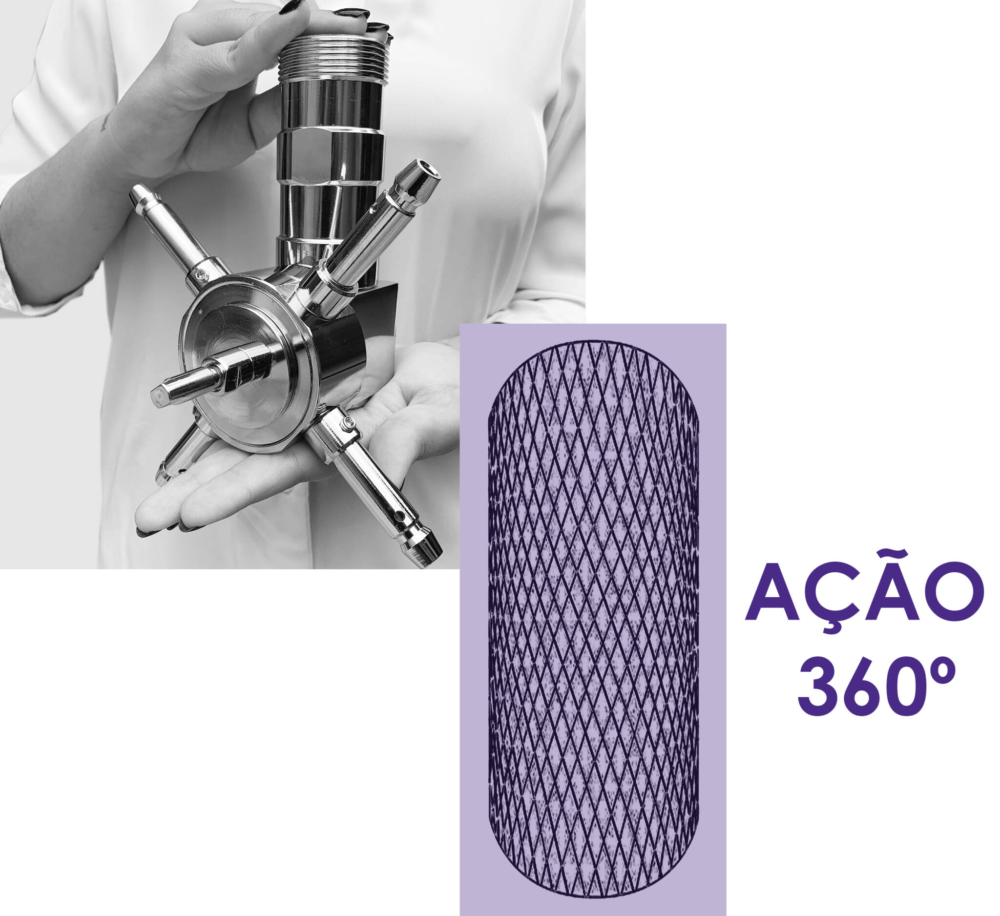

Produtos técnicos
Cabeçotes rotativos GREENFARMS para limpeza CIP com controle preciso.
Desenvolvidos para ambientes industriais que exigem redução de consumo, limpeza eficiente e operação confiável.
Solicitar proposta
Soluções para limpeza CIP e manutenção industrial
Cabeçote rotativo
Rotação 3D 360° para limpeza completa de tanques e sistemas CIP.
O cabeçote rotativo GREENFARMS elimina pontos cegos, reduz uso de água e químicos e melhora a repetibilidade do processo de limpeza.
Características
- Aço inox de alta resistência
- Rotação 3D 360°
- Controle de velocidade preciso
- Pressão ajustável
- Modelos customizáveis
- Redução de recursos e tempo
Desempenho
Operação consistente e repetível, projetada para exigências de processos farmacêuticos, alimentícios e biotecnológicos.
Compatibilidade
Construído para integração com sistemas CIP existentes e requisitos de higiene industrial.
Customização
Dimensões, materiais e controles adaptados às condições de cada aplicação técnica.
Aplicações
Falar com o comercial
Projetado para setores industriais exigentes.
Alimentícia, farmacêutica, biotecnológica e química.